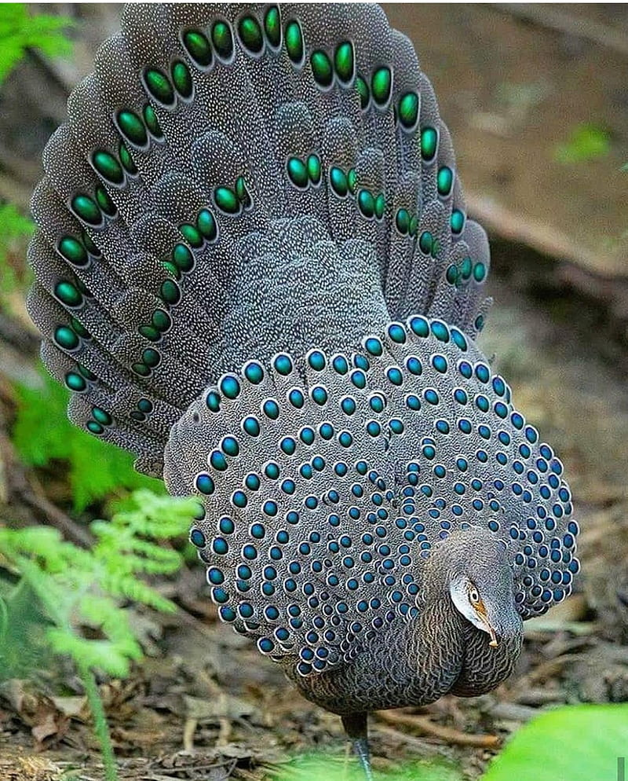
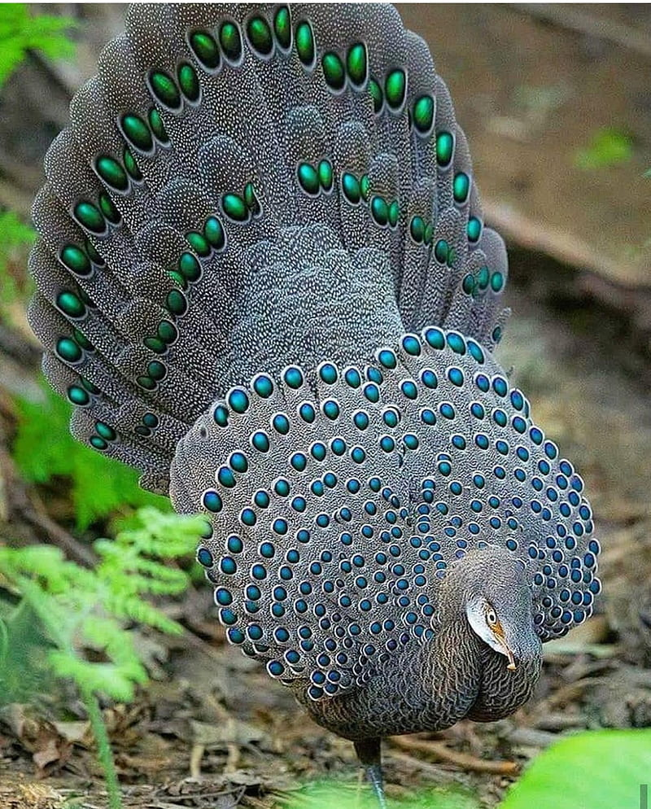

ABOUT US
 

NATURE TECH
Our forests, rivers, oceans and soils provide us with the food we eat,
the air we breathe, the water we irrigate our crops with.
Nature is our best friend which provides us all the resources to live here.
☻ Nature is what we see and feel around us.
☻ Nature is like our mother who never scolds us unless we do anything wrong.
☻ I am happy to interact with nature and also happy to be a part of this earth.
☻ The nature is very attractive and full of my favorite green color.
☻ It provides us the air to breathe, the water to drink, the soil to make a home, and the land to stay.
☻ Nature gives us fruits, vegetables, and grains to eat.
☻ We should enjoy nature without disturbing its balance.
☻ Nature is a precious and notable gift given to us by god.
☻ Nature is our best friend. We should do plantation and nurturing to keep it healthy.
☻ We must keep our nature healthy, and peaceful.
Nature refers to the physical world and all forms of life species on earth in general. Our natural ecosystem is the community of biotic and abiotic components. The biotic components are the living organisms that also include humans. Abiotic components are the non-living components such as air, water, minerals and soil.